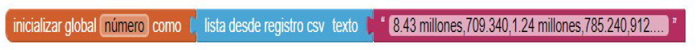
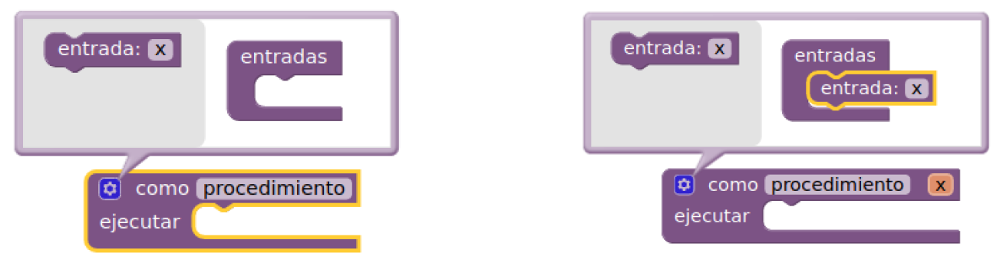
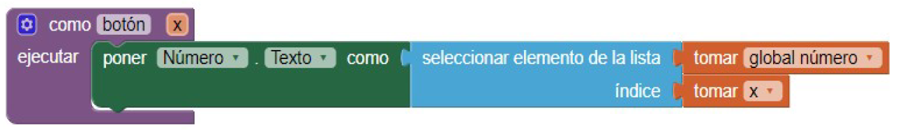
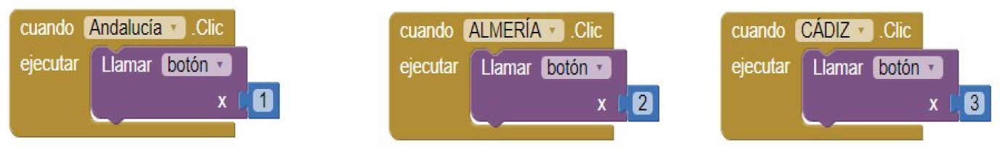

Junto a un compañero y descarga todos los recursos necesarios que se encuentran en nuestro lugar de referencia. Una vez aquí, sigue los pasos para realizar la aplicación.
Resumen de la aplicación
En este quinto proyecto utilizaremos la disposición vertical scroll y los registros con formato CSV, es decir, una base de datos donde los datos se separan por comas.
La aplicación hará lo siguiente:
a) Cuando marquemos en los diferentes botones, abajo irán saliendo el numero de habitantes que tiene esa provincia o la región de Andalucía.
b) Para que aparezcan todas las provincias se dispone de una ventana enrollable, por lo que puedo ir moviéndola con el dedo.
Instrucciones: Modo diseñador
1.- Conectar con App Inventor 2 y empezar un nuevo proyecto. Llamarlo Dire Straits.
2.- Conectar Al Companion para ver los cambios en el móvil.
3.- Utilizando la parte del diseñador del programa y en la parte de Medios, subir todas las imágenes.
4.- La estructura del programa será la siguiente:
5.- Empezaremos cambiando las propiedades de la ventana Screen1:
Disposición horizontal: Centro
Color de fondo: cualquiera
Enrollable: señalar
6.- Ahora insertaremos un campo de texto, ponemos el texto HABITANTES DE ANDALUCÍA y le ponemos un color de fondo diseñado por nosotros en Color de fondo / Custom.
7.- Ahora viene la parte nueva del proyecto, que es introducir una disposición vertical scroll. Esta disposición tendrá unos 58% de alto para que solo se vean los botones Andalucía, Almería y Cádiz pero para diseñarla es mejor ponerle al principio 500 pixeles de alto y cuando terminemos se cambia. Ponerle un color de fondo.
8.- Insertamos 9 disposiciones horizontales, poniendo en la izquierda 9 botones y en la derecha 9 imágenes.
- Disposiciones horizontales: ponerla en el centro, alto automático y ancho ajustado al contenedor. Quitar el color de fondo para que se vea el del scroll vertical.
- Botones: alto 70 píxeles y ancho del 50%. Poner los nombres de las provincias.
- Imágenes: alto 70 píxeles y ancho del 50%. Asociarle la foto correspondiente.
9.- Pasamos a la última parte, donde pondremos una disposición vertical dispuesta en el centro, con alto automático y ancho del 70%. Además se le pone un color de fondo.
10.- Introducir 2 etiquetas dentro de la disposición anterior con un 10% de alto y un 60% de ancho. En la etiqueta de arriba poner el texto “Nº de habitantes” y por último cambiarle el color a las dos.
11.- Por último ir al scroll vertical y cambiar el alto desde los 500 píxeles a 58% aproximadamente, tienen que verse bien las dos últimas etiquetas.
Instrucciones: Modo bloques
12.- La programación es muy sencilla, primero crearemos una base de datos.

Los números se separan con comas por lo que los miles tienen que ir con puntos. La base de datos con el número de habitantes quedaría así:
1) Andalucía: 8.43 millones 2) Almería: 709.340 3) Cádiz: 1.24 millones
4) Córdoba: 785.240 5) Granada: 912.075 6) Huelva: 519.972
7) Jaén: 638.099 8) Málaga: 1.64 millones 9) Sevilla: 1.94 millones
13.- Ahora vamos a decirle al programa que el dato que saque de la base de datos CSV lo coloque en la segunda etiqueta, llamada número. Lo primero es crear un procedimiento y llamarle botón.


14.- Para terminar programamos los 9 botones poniéndole un número según la posición que ocupe en la base de datos.

15.- Por último ir a Generar y pinchar en App (generar código QR para el archivo .apk).
16.- Descargar el archivo en el móvil y abrirlo. Si no se descarga es por que hay que habilitar el móvil en los ajustes para poder descargar. El móvil pedirá que instales la App.
Publica en tu Sitio Web
Una vez finalizada la actividad es el momento de que utilices cinco minutos de tu tiempo para compartir la App que acabas de crear en tu Google Sites. Realiza una serie de capturas, y comenta de manera resumida el proceso llevado a acabo. Por último indica y muestra las mejoras que le realizaste a la aplicación.